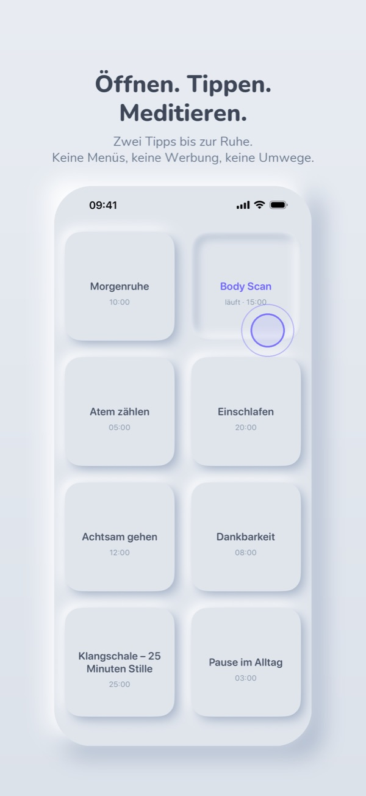

Mindful Player
Öffnen. Tippen. Meditieren.
So funktioniert's
- Lange drücken: eine Taste gedrückt halten und eine Audiodatei aus deinem Ordner wählen, auf dem Gerät, in der Cloud oder auf einem Netzlaufwerk.
- Tippen spielt, noch einmal tippen pausiert, doppelt tippen stoppt.
- Die Wiedergabe läuft weiter, wenn das Display aus ist oder das Handy gesperrt ist.
- Über „Taste bearbeiten“ gibst du einer Taste einen eigenen Namen oder leerst sie.

Häufige Fragen
Wie verbinde ich mein Netzlaufwerk (NAS)?
iPhone: In der Dateien-App oben rechts auf „…“ tippen, „Mit Server verbinden“ wählen und die Adresse deines Netzlaufwerks eingeben (z. B. smb://192.168.178.20). Danach erscheint es in Mindful Player unter „Ordner wählen“.
Android: Android braucht dafür eine kleine Zusatz-App, zum Beispiel den kostenlosen „CIFS Documents Provider“. Dort das Netzlaufwerk eintragen; danach erscheint es in Mindful Player unter „Ordner wählen“.
Funktioniert die App ohne Internet?
Ja. Dateien vom Gerät werden direkt abgespielt. Dateien von einem Netzlaufwerk oder aus der Cloud lädt die App einmal und spielt sie danach offline. Ersetzt du eine geladene Datei, bleibt sie noch eine Stunde gespeichert und wird dann automatisch gelöscht. Deine eigenen Dateien löscht die App nie.
Warum fragt die App nach Benachrichtigungen? (Android)
Während eine Meditation läuft, zeigt Android eine Benachrichtigung. Nur so darf die Wiedergabe bei gesperrtem Display weiterlaufen.
Kann die App „Nicht stören“ einschalten?
Android: Ja. Beim ersten Start fragt die App einmal nach dem Zugriff auf „Bitte nicht stören“. Danach ist es an, solange die App offen ist oder eine Meditation läuft, und geht danach wieder aus. Deine Ausnahmen, etwa Favoriten, kommen weiter durch.
iPhone: iOS lässt Apps das nicht selbst schalten. Mit einer Automation in der Kurzbefehle-App geht es trotzdem: In Mindful Player lange auf eine Taste drücken, dann „Ruhe beim Meditieren“ wählen. Die Anleitung dort öffnet direkt eine neue Automation.
Was kostet die App?
Nichts. Es gibt keine Werbung und kein Abo, und das bleibt so.
Welche Sprachen gibt es?
36 Sprachen. Die App richtet sich automatisch nach der Sprache deines Handys.
Kontakt
Fragen, Fehler, Wünsche: mail@robinhelm.de